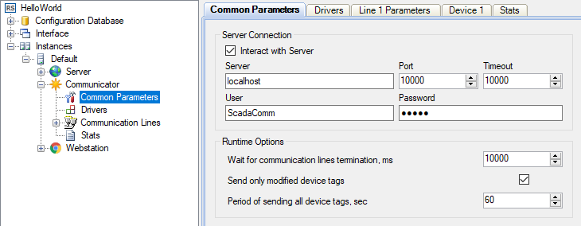

Communicator interacts with controllers and transmits data to the Server application. Communication with controllers connected to a system is executed in parallel across multiple lines. Communicator receives current data, archive data, events from controllers and sends commands to controllers. The application helps troubleshooting issues with communication lines and devices.

Figure 1. Graphical shell for Communicator configuring
Communicator works as a service. The graphical shell for Communicator configuring is built into the Administrator application (see Figure 1). Information about the application, communication lines and each connected device is stored in log files. Communicator is designed for non-stop running.
Developers are able to implement their own device drivers to interact with a variety of controllers.